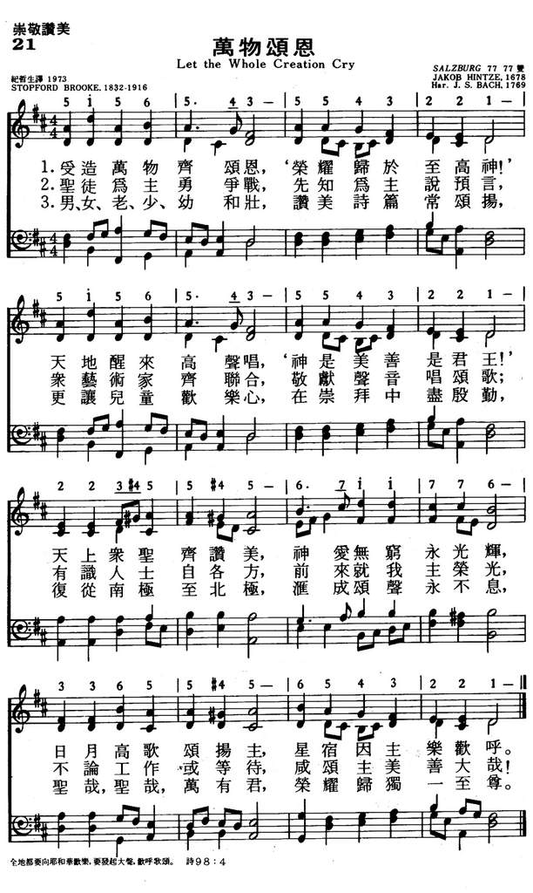
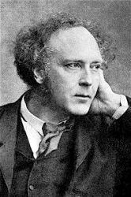
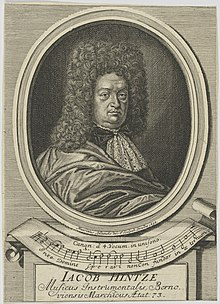

1786
Let The Whole Creation
Cry _Brooke
021万物颂恩
| 簡介
Let the
Whole Creation Cry (Psalm 148) |
| Originally this text was more than
twice as long as the present version because it followed Psalm 148 in
directing additional parts of the created order to praise God. This
wide-ranging text is set here to a suitably expansive and well-crafted
17th-century chorale melody. |
-
"LET THE WHOLE CREATION CRY"
hymnstudiesblog
- Jacob Hintze
-
|
|
|
|
1 Let the whole creation cry,
"Glory to the Lord on high!"
Heav'n and earth, awake and sing,
"God is good and therefore King!"
Praise Him, angel hosts above,
ever bright and fair in love;
sun and moon, lift up your voice,
night and stars, in God rejoice!
2 Warriors fighting for the Lord,
prophets burning with His Word,
those to whom the arts belong,
add their voices to the song.
Kings of knowledge and of law,
to the glorious circle draw;
all who work and all who wait,
sing, "The Lord is good and great!"
3 Men and women, young and old,
raise the anthem manifold,
and let children's happy hearts
in this worship bear their parts;
from the north to southern pole
let the mighty chorus roll:
“Holy, holy, holy One,
glory be to God alone!”
Source: Hymns
to the Living God #52
|
021万物颂恩
1.受造万物齐颂恩,‘荣耀归于至高神!’
天地醒来高声唱, ‘神是美善是君王! ’
天上众圣齐赞美，神爱无穷永光辉，
日月高歌颂扬主，星宿因主乐欢呼。
2.圣徒为主勇争战, 先知为主说预言,
众艺术家齐联合, 敬献声音唱颂歌;
有识人士自各方，前来就我主荣光，
不论工作或等待，咸颂主美善大哉！
3.男、女、老、少、幼和壮，赞美诗篇常颂扬，
更让儿童欢乐心，在崇拜中尽殷勤，
复从南极至北极，汇成颂声永不息，
圣哉，圣哉，万有君，荣誉归独一至尊。
|
|
https://www.mred365.cn/szxg/7024.html

https://hymnary.org/hymn/GG2013/page/847
.png) |
|
|
|

-
Let the Whole Creation Cry · Haven Acappella Hymns
LX1786
Let The Whole Creation
Cry
021万物颂恩
|
Short Name: |
Stopford A. Brooke |
|
Full Name: |
Brooke, Stopford Augustus, 1832-1916 |
|
Birth Year: |
1832 |
|
Death Year: |
1916 |
Brooke, Stopford
Augustus,

M.A., was born at
Letterkenny, Donegal, Nov. 14, 1832, and educated at Trinity College,
Dublin, graduating B.A. 1856; M.A. 1858. He carried off the Downes prize and
the Vice-Chancellor's prize for English verse. On taking Holy Orders he was
successively Curate of St. Matthew's, Marylebone, 1857-59; of Kensington,
1860-63; Chaplain to the British Embassy at Berlin, 1863-65; Minister of St.
James's Chapel, York Street, London, 1866-75; and of Bedford Chapel, 1876.
He was also appointed Chaplain in Ordinary to the Queen, in 1872. In 1865 he
published the Life and Letters of the late F. W. Robertson;
in 1874, Theology in the English Poets; in 1876, Primer
of English Literature, &c. On seceding from the Church of England in
1881, he published for the use of his congregation, Christian
Hymns, a collection of 269 pieces. Of these he is the author of:—
|
Title: |
SALZBURG (Hintze) |
|
Composer: |
Jakob Hintze (1678) |
|
Meter: |
7.7.7.7 D |
|
Incipit: |
51565 43554 32215 |
|
Key: |
C
Major |
|
Source: |
Gesangbuch, Darmstadt, 1687;Praxis Pietatis Melica, Berlin,
1678;German chorale: Alle Menschen muessen sterben |
|
Copyright: |
Public Domain |
|
Short Name: |
Jakob Hintze |
|
Full Name: |
Hintze, Jakob, 1622-1702 |
|
Birth Year: |
1622 |
|
Death Year: |
1702 |
Partly as a result of the
Thirty Years' War and partly to further his musical education, Jakob Hintze
(b. Bernau, Germany, 1622; d. Berlin, Germany, 1702) traveled widely as a
youth, including trips to Sweden and Lithuania. In 1659 he settled in
Berlin, where he served as court musician to the Elector of Brandenburg from
1666 to 1695. Hintze is known mainly for his editing of the later editions
of Johann Crüger's Praxis Pietatis Melica, to
which he contributed some sixty-five of his original tunes.
Bert Polman
雅各布·欣茨

"And I heard as it were the voice of a great multitude….saying, Alleluia! for
the Lord God omnipotent reigneth!" (Rev. 19:6)
INTRO.:
A hymn that is filled with commitment to praise the Lord is "Let the Whole
Creation Cry." The text was written by Stopford Augustus Brooke, who was born on
Nov. 14, 1832, at Glendoen, Letterkenney, in Donegal, Ireland. Educated at
Kingstown in Kidder minster, he attended Trinity College where he won the Downes
Prize and the Vice Chancellor’s prize for English verse, graduating with a B. A.
in 1856 and an M. A. in 1858. Becoming an Anglican minister, he served at St.
Matthews in Marylebone from 1857 to 1859 and then at St. Mary Abbots in
Kensington from 1860 to 1863. After working as chaplain to the British Embassy
in Berlin, Germany, from 1863 to 1865, he was minister at St. James Chapel, York
St. in London from 1866 to 1875, and was appointed as Chaplain in Ordinary to
the Queen in 1872. Some of his written works include the Life
and Letters of the Late F. W. Robertson in 1865, Theology
in the English Poets in 1874, and Primer
of English Literature in 1876.
In 1876, Brooke leased Bedford Chapel, where he continued to preach until his
retirement in 1894. Withdrawing from the Church of England in 1880, he became an
independent because of his liberal views, but although he had Unitarian leanings
he never joined any denomination. In 1881, he prepared Christian
Hymns for use in the congregation, and it included this hymn
entitled "Invitation to Praise God" originally in ten four-line stanzas, loosely
based on Psalm 148. His later works include Poems in
1888 and A
Treasury of Irish Poetry in the English Tongue around 1900,
and his death occurred on Mar. 18, 1916 at The Four Winds, Ewhurst, in Surrey,
England. He refused to copyright his hymns, saying, "They are free, as I think
all hymns ought to be, for the use of anyone who may care for them." A couple of
melodies have been used with this one. The traditional tune (Salzburg) dates
from 1678, is attributed to Jacob Hintze, and was harmonized by Johann Sebastian
Bach. It requires the stanzas to be combined into eight-line stanzas.
Most modern books set the song to an 1817 Welsh tune (Llanfair) composed by
Robert Williams and arranged by John Roberts. It is a wonderful melody but the
vast majority of books use it with the anonymous Latin hymn "Jesus Christ Is
Risen Today." However, I like the "Alleluia"s, which are not used with the
Hintze melody, so I provided my own tune (Shakamak) in imitation of Welsh hymn
melodies. Among hymnbooks published by members of the Lord’s church during the
twentieth century for use in churches of Christ, the text is found in the 1986 Great
Songs Revised edited by Forrest M. McCann with the Hintze
tune; and in the 1998
Hymn Supplement published by The Columbia Hymn Association
Supplement, the 2007 Hymns
for Worship Supplement edited by R. J. Stevens et. al, and the
2007 Sumphonia
Hymn Supplement from Guardian of Truth Foundation edited by
Steve Wolfgang et. al., all three with the Williams tune.
The song calls upon all of God’s creation to praise God and sing "Alleluia!" to
Him.
I. Stanza 2 is addressed to heaven and earth
"Let the whole creation cry: Alleluia!
‘Glory to the Lord on high!’ Alleluia!
Heaven and earth, awake and sing: Alleluia!
‘God is good and therefore King!’ Alleluia!"
A. The whole creation includes everything in the physical universe because made
it all: Exo. 20:11
B. The whole creation should give God the glory: Ps. 29:1-2
C. Heaven and earth should awake and sing because God created them: Gen. 1:1.
Evidently editors have felt the need to do a lot of tinkering with this song.
For the last line, one book reads, "Praise to our almighty King," another reads,
"God is God and therefore King," and still another reads, "God is good and
reigns supreme."
II. Stanza 2 is addressed to the heavenly hosts both spiritual and physical
"Praise Him, all ye hosts above: Alleluia!
Ever bright and fair in love: Alleluia!
Sun and moon, uplift your voice: Alleluia!
Night and stars, in God rejoice! Alleluia!"
A. The heavenly hosts are told to praise the Lord: Ps. 103:20-21
B. The sun and moon are also told to lift up their voice: Ps. 148:3-4
C. Even the night and stars are told to join in declaring God’s glory: Ps.
19:1-3. Again, tinkering has occurred. In the first line, one book reads,
"Praise Him, angel hosts above," and another reads, "Praise God, heavenly hosts
above." Many books change "uplift" in the third line to "lift up."
III. Stanza 3 is addressed to God’s people
"Warriors fighting for the Lord: Alleluia!
Prophets burning with His word: Alleluia!
Those to whom the arts belong: Alleluia!
Add their voices to the song: Alleluia!"
A. All Christians are to be soldiers or warriors of Christ: Eph. 6:10-13 (books
have changed this to "Christians fighting" or even to "Rulers bowing to")
B. There are no longer prophets today, those who are directly guided by the
Holy Spirit to reveal God’s word to mankind, but all Christians are to be
teachers: Heb. 5:12
C. "The arts" here may refer to more than just things like painting, sculpture,
music, and poetry, but to anything made by "artisans," and since all able
Christians are to work at some trade, they should glorify God even in their
work: Col. 3:22-24 (more tinkering–some books have the last line read, "Join the
rushing of the song")
IV. Stanza 4 is addressed to those in civil authority
"Kings of knowledge and of law: Alleluia!
To the glorious circle draw: Alleluia!
All who work and all who wait: Alleluia!
Sing, ‘The Lord is good and great!’ Alleluia!"
A. While it is true that not many do or have done so, even kings and other
rulers should praise the Lord: Ps. 148:11 (some books read simply, "Those of
knowledge and of law")
B. They should to His glorious circle draw rather than setting themselves
against the Lord: Ps. 2:1-3
C. Indeed, all who work and all who wait in the civil affairs of this life
should acknowledge God: Dan. 4:36-37
V. Stanza 5 is addressed to all of mankind
"Men and women, young and old: Alleluia!
Raise the anthem manifold: Alleluia!
And let children’s happy hearts: Alleluia!
In this worship bear their parts: Alleluia!"
A. Both men and women are encouraged to praise God, just as the Lord promised
to pour out of His Spirit on both male and female: Joel 2:28-29
B. Both young and old are encouraged to praise God: Ps. 148:12
C. Even children are encouraged to praise God: Ps. 8:2 (again, more tinkering;
in the second line, one book reads, "Raise the anthem loud and bold;" in the
third line, some books read "Children, with your happy hearts;" and in the last
line one book reads, "take their parts," while others read, "sing your parts.")
VI. Stanza 6 is addressed to the entire world
"From the north to southern pole: Alleluia!
Let the mighty chorus roll: Alleluia!
‘Holy, holy, holy One: Alleluia!
Glory be to God alone!’ Alleluia!"
A. The entire world from north to south should praise God: Ps. 89:11-12
B. The entire world should sing "Holy, Holy, Holy": Isa. 6:3
C. The entire world should give glory to God alone: 1 Pet. 3:10-11
CONCL.:
Both the 1998
Hymn Supplement from The Columbia Hymn Association and the
2007 Sumphonia
Hymn Supplement say of this hymn that it "calls for praise to
God from all sources. This hymn depicts all created things, all heavenly beings,
and all people singing praise to the Lord (Psa. 148:1-14, Rev. 19:1-6)." Truly,
as our own hearts are filled with praise for all that God has done for us, we
should declare to the entire world in singing alleluia, "Let the Whole Creation
Cry."
https://hymnstudiesblog.wordpress.com/2009/11/17/quotlet-the-whole-creation-cryquot/
Zur Navigation springenZur
Suche springen

Jacob Hintze (
Moritz
Bodenehr 1695); unter dem Porträt ein
vierstimmiger Kanon über „In te, Domine, speravi, non
confundar in aeternum“ (Schlussvers des
Te
Deum).
Jacob Hintze (* 1622 in Bernau bei
Berlin; † 1702 in Berlin)
war ein deutscher Kirchenmusiker.
Jacob Hintze, Sohn des Bernauer
Stadtmusikers Georg Hintze und dessen Frau Catharina, geborene
Rückers, erhielt seine musikalische Ausbildung zwischen 1638 und
1643 in Berlin und Spandau.
Danach hielt er sich zeitweise in verschiedenen Städten des
Ostseeraums auf. Kurzfristige musikalische Tätigkeiten übte er in
Berlin, Spandau, Insterburg und Küstrin aus.
Er wirkte von 1651 bis 1659 in Stettin und
danach bis an sein Lebensende in Berlin als Stadtmusiker.
Nach dem Tod Johann
Crügers gab er zwischen 1666 und 1698 die 12. bis
28. Auflage des Gesangbuchs Praxis
pietatis melica heraus, dem er auch eigene
Kompositionen beifügte. Er komponierte unter anderem eine Melodie zu Paul
Gerhardts Gib dich zufrieden und sei stille (Evangelisches
Gesangbuch Nr. 371). Johann
Sebastian Bach schrieb mehrere Choralbearbeitungen zu
Paul Gerhardts Text; aber nur der Bearbeitung für Schemellis Gesangbuch
(BWV 460) liegt Hintzes Melodie zugrunde. Kurt
Fiebig schuf 1966 eine gleichnamige Kantate.
Jacob Hintze heiratete 1664 in Berlin
Anna Catharina Reuschel, die Tochter des Hofbuchbinders Martin
Reuschel. Der Ehe entstammten drei Kinder.
Einzelnachweise
https://de.wikipedia.org/wiki/Jacob_Hintze
{kind=link}